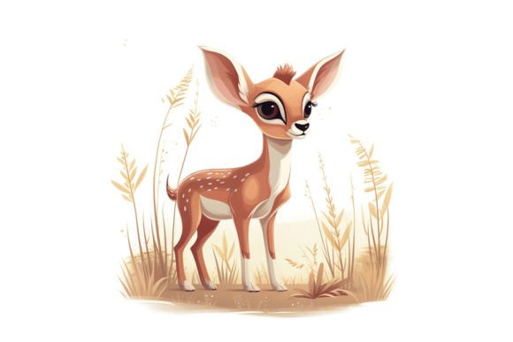
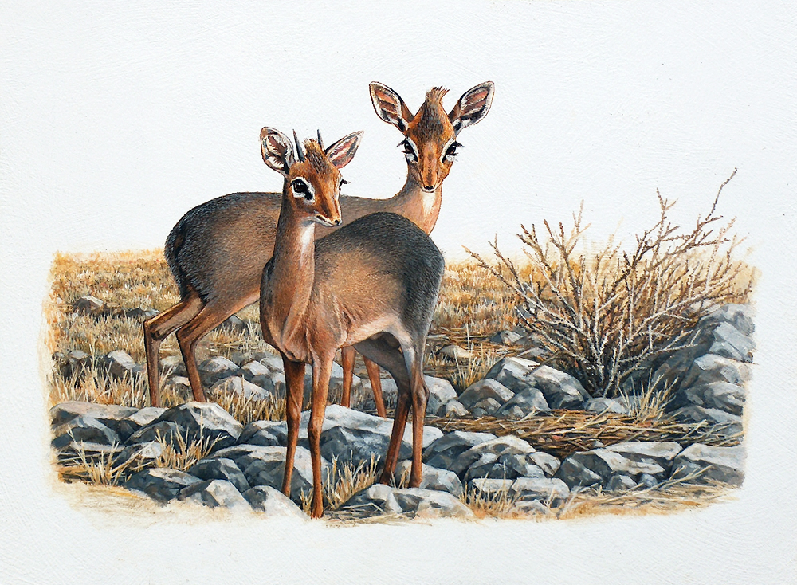
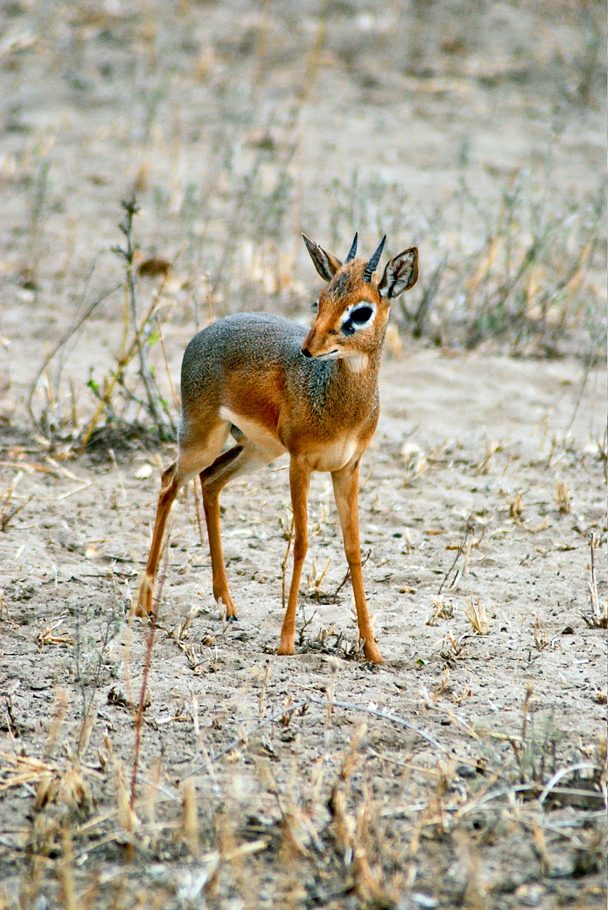
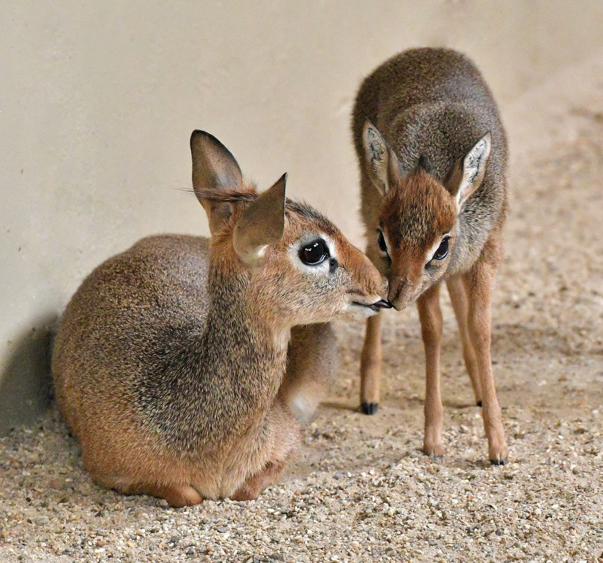
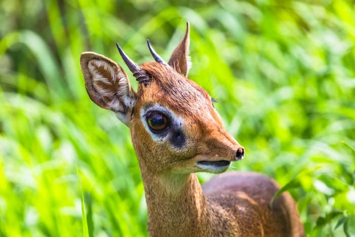

* click on the picture text to see and read more about Dik-Dik
Dik-Diks Gallery
Home
All About
Gallery
Fun Facts
Click the video to see the story about Dik-Dik

Cute dik-dik pictures for kids

More pictures /
poster author Johan Hoekstra

Dik-diks are herbivores

Dik-Dik mothers are paragons of nurturing care

Big Eyes, Big Advantage